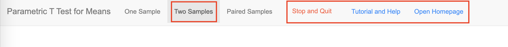

Tutorial and Help for MEPHAS
We hope this document can help users get familiar with MEPHAS and understand how to use MEPHAS. Additionally, we also provide some links which could help users learn more statistics.
We expected MEPHAS to help researchers who have already got the data or known the objectives (even unclear) to conduct statistics. MEPHAS could also help students to practice statistical methods, in the statistical lectures However, for those who do not understand basic statistics, it is hard to start MEPAHS.
Overview
1. Interface layout
This is the general layout of the interface in MEPHAS.

On the top are tabs used to choose the methods, and button to quit the whole interface, to help help, and to go to home page.
Red Square 1 gives the general introduction about the functions or methods.
Red Square 2 in the left is used to input data or setting the parameters.
Red Square 3 in the right is used to output results.
2. Header of the interface
The header includes interface's name (which also indicates the statistical methods in general), method tabs to switch into the specific method, and red and blue buttons at the last.

Stop and Quit is used to end the interface.
Tutorial and Help will open this help page.
Open Homepage will open the link to MEPHAS home page.
Contents
1. How to use the tool options
This part will introduce how to use the tools and options in MEPHAS. For example, how to input data, how to download data, how to use the buttons, and so forth.
2. Supplementary links to statistical methods
This part will give some supplementary links and knowledge about the statistical methods.